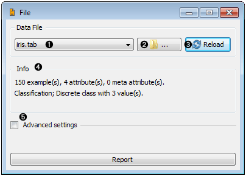

File¶
Signals¶
- Inputs:
- None
- Outputs:
- Examples (ExampleTable)
Attribute-valued data set read from the input file.
Description¶
File widgets reads the input data file (by default, tab-delimited data table) and sends the data to the output channel. It maintains a history of most recently used data files. For convenience, the history also includes a directory with the sample data sets that come with Orange instalation. The widget can read data from simple tab-delimited or comma-separated files, as well as files in C4.5 format and Weka’s .arrf files.
- A list of recently opened data file. The last item in this list is “Browse documentation data sets ...”, which opens a window with a list of preloaded data sets that come with Orange instalation.
- Select a (new) data file to load.
- Reload a current data file.
- Displays basic information on current data set. Empty if no data set is loaded.
- Show/hide advanced setting (see below).
- Adds an entry to the report providing information on the data file and included features (see below).

- Tab-delimited file can include user-defined symbols for undefined (unknown) values. The symbols for “don’t care” and “don’t know” values can be specified in the corresponding edit lines. The default values for “don’t know” and “don’t care” depend upon format. Most users will use tab-delimited files: keep the field empty or put a question mark in there and that’s it. Most algorithms do not differ between don’t know and don’t care values, so consider them both to mean undefined.
- These setting become important when multiple data sets are loaded, usually with multiple File widgets. A typical example is loading separate training and testing data from two files. Orange will usually treat the same-named features as the same feature, so a classifier which uses the attribute “petal length” from the first will use the attribute with the same name from the second. In cases when features from different files just accidentally bear the same name, one can instruct Orange to either always construct new features, or construct them when they have different value domains. Use this option with great care (if at all).
Examples¶
Any of your schemas should probably start with the File widget. In the schema below, the widget is used to read the data that is then sent to both Data Table widget and to widget that displays Attribute statistics.